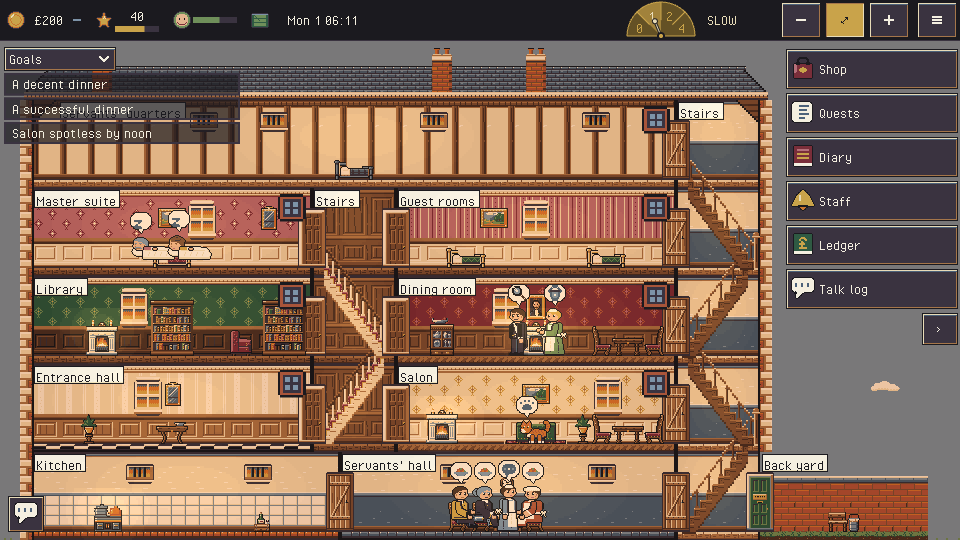

Very Good, sir!
You are the butler of an English country house in 1910. The staff and the family lead their own lives; keep the house running, the dinner on time and the guests content, until the season ends.
Olet englantilaisen kartanon hovimestari vuonna 1910. Palvelusväki ja perhe elävät omaa elämäänsä. Pidä talo kunnossa, päivällinen ajallaan ja vieraat tyytyväisinä kauden loppuun asti.
PlayPelaa